10: Nucleophilic addition to carbonyl groups
Contents
10: Nucleophilic addition to carbonyl groups#

(photo credit: https://www.flickr.com/photos/gzlu/)
Introduction#
It’s possible that the fuel for the car you drive thirty years from now will come from the back end of a panda. Not literally, of course – but it just might turn out that future biofuel technology will be derived in part from the stuff that workers have to clean out of the enclosure housing Ya Ya and Le Le, the two resident pandas at the Memphis Zoo in . At least, that’s the hope of Dr. Ashli Brown, a biochemistry professor at Tennessee State University.
First, a little background. If you are like most people in the United States, you are already burning ethanol every time you drive: in 2012, the U.S. Department of Energy reports that over 13 million gallons of ethanol were sold at gas stations nationwide, most often as a 10% mixture along with 90% conventional gasoline. The ethanol we burn today is made by fermenting the sugars present in edible corn. The use of corn ethanol, while a significant step forward in the effort to move away from petroleum fuels and towards carbon-neutral, renewable energy sources, is far from a permanent, sustainable solution to the world’s ever-increasing energy needs. Growing corn crops requires a lot of energy and expense, from running the large equipment used to plow and harvest the fields, to manufacturing and applying pesticides and fertilizers, all the way to trucking the corn to the ethanol plant. In fact, some calculation methods suggest that more energy goes into producing a gallon of corn-based ethanol than is released when the ethanol is burned.
Moreover, growing corn requires a lot of water, and takes up land which otherwise could be used for growing food, or preserved as a natural habitat. A recent study by scientists in South Dakota reported that between 2006 and 2011, a full 1.3 million acres of wetland and prairie were plowed over and converted to biofuel crop production in five midwestern states.
What would be much better in the long run is if we could produce ethanol or other biofuels not from resource-intensive food crops like corn, but from non-edible plant materials: grasses, trees, and agricultural byproducts such as the cobs and stalks from corn plants. Switchgrass, for example, is a native North American prairie grass that is thought to have high potential for biofuel production.
So if we can make ethanol from corn, couldn’t we just change over to switchgrass using the same technology?
Unfortunately, it’s not nearly that simple. Ethanol is made by ‘feeding’ glucose to living yeast cells, allowing them to break down the sugar into ethanol – a metabolic process called fermentation. Corn kernels contain sugar in the form of starch, a polysaccharide of linked glucose molecules. Enzymes called ‘amylases’ are used to break up the starch polymer into individual glucose molecules (as well as two-glucose units called cellobiose), which are then fermented by the yeast.

fig1b
The rest of the corn plant – the stalks, leaves, and cobs – is composed in large part of another glucose polymer called cellulose.

fig 1c
Cellulose is a major component of plant cell walls, and is the most abundant organic compound on the planet - an enormous source of glucose for fermentation! The problem, from a renewable energy perspective, is how to get at the glucose monomers that make up the polymer. Look closely at the bond connecting two glucose monomers in starch, and then compare it to the same bond in cellulose. They both link the same two carbons of glucose, but with opposite stereochemistry. Recall that enzymes are very sensitive to the stereochemical configuration of their substrate molecules. It should come as no surprise, then, that the amylase enzymes which are so efficient at breaking apart starch are completely ineffective at breaking apart cellulose. Other enzymes, known as cellulases, are needed for this job. These enzymes do exist in nature: just think about what happens to tree branches, leaves, and other cellulose-rich plant matter that lies on the forest floor. These slowly rot away, the cellulose broken apart by cellulase enzymes in microscopic fungi.
The key word here, though, is ‘slowly’. Fungi living on the forest floor are not in any great hurry to degrade the leaves and wood around them – the cellulose is not going anywhere. Fungal cellulases are, comparatively speaking, very slow, inefficient enzymes. Herein lies the biggest challenge to the development of economically viable production of ethanol from cellulosic sources such as switchgrass or wood. Breaking the glucose-glucose bonds in cellulose is the main bottleneck in the whole process.
This is where the pandas come in.
Pandas live primarily on a diet of bamboo, obtaining their energy from the cellulose in the plant. Like other plant-eaters such as cows, horses, and sheep, pandas do not make their own cellulase enzymes. Rather, they rely on a diverse population of symbiotic microbes inhabiting their digestive tracts to do the job of cellulose digestion for them. Unlike the microbes living the slow-paced lifestyle of the forest floor, though, the panda’s microbes don’t have a lot of time to spare - the food is moving through the system pretty quickly. In theory, evolutionary pressure should have resulted in panda-gut microbes with speedy cellulase enzymes, and that is what Dr. Ashli Brown at Tennessee State was hoping to find as she and her research students analyzed panda feces from the Memphis Zoo. They have had some success: at the fall, 2013 meeting of the American Chemical Society, Dr. Brown announced that her group, working in cooperation with colleagues at the University of Wisconsin, had found over forty cellulose-digesting bacteria, courtesy of Ya Ya and Le Le. The next step is to clone the cellulase- encoding genes, use the DNA to produce recombinant enzyme, and see just how fast they are.
Other less cuddly and photogenic animals are also being studied with similar goals in mind. Dr. Falk Warnecke, working at the U.S. Department of Energy Joint Genome Institute in Northern California, has been investigating the microbes that live in the guts of wood-eating termites, and many other researchers around the world are interested in the symbiotic bugs which inhabit the rumen of cows and sheep.
The problematic chemical reaction catalyzed by cellulase enzymes is, in organic chemistry terminology, an ‘acetal hydrolysis’. Acetals are derived from aldehydes. The reactions that occur at the carbonyl carbon of aldehydes and ketones is absolutely central to the chemistry of carbohydrates such as starch and cellulose, and it is this chemistry that is the subject of the chapter we are about to begin.
10.1 Nucleophilic addition to aldehydes and ketones: an overview#
10.1A: The aldehyde and ketone functional groups#
Recall from chapter 1 that the ketone functional group is made up of a carbonyl bonded to two carbons, while in an aldehyde one (or both) of the neighboring atoms is a hydrogen.
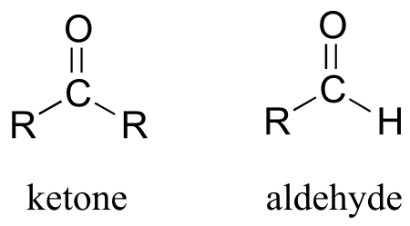fig1d
You probably are familiar with the examples shown below: acetone, the simplest ketone compound, is the solvent in nail polish remover, benzaldehyde is the flavoring in maraschino cherries, and formaldehyde (a special case in which the carbonyl carbon is bonded to hydrogens on both sides) is the nasty-smelling stuff that was used to preserve the unlucky frog that you dissected in high school biology class. The male sex hormone testosterone contains a ketone group in addition to alcohol and alkene groups.
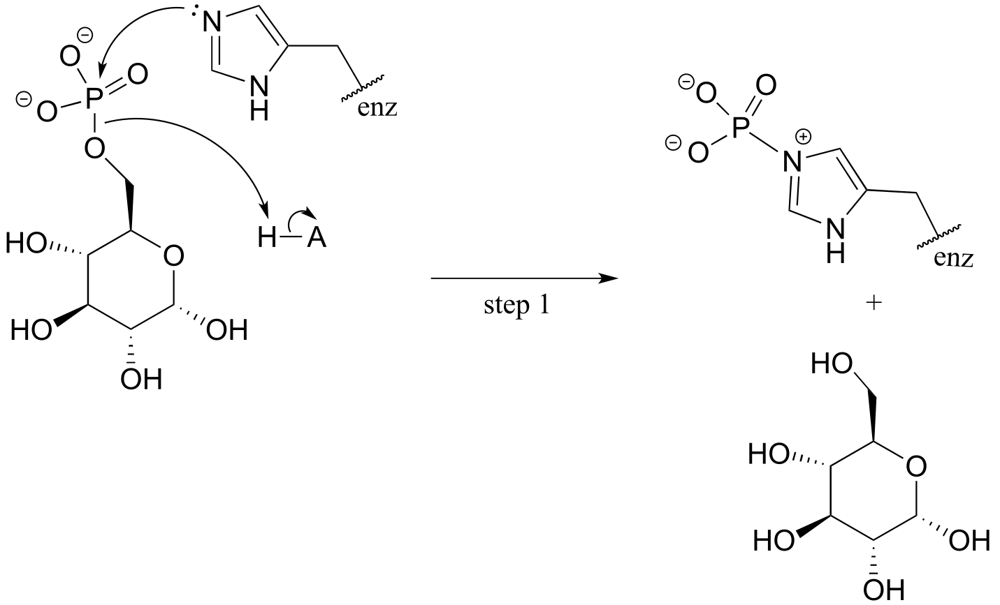fig 1e
Recall from chapter 2 the bonding picture in a ketone or aldehyde: the carbonyl carbon is sp2 hybridized, with its three trigonal planar sp2 orbitals forming σ bonds with orbitals on the oxygen and on the two carbon or hydrogen atoms. The remaining unhybridized 2p orbital is perpendicular to the plane formed by the sp2 orbitals, and forms a π bond through a side-by-side overlap with a 2p orbital on the oxygen. The σ and p bonds between the carbon and oxygen combine to make the C=O double bond that defines the carbonyl functionality.
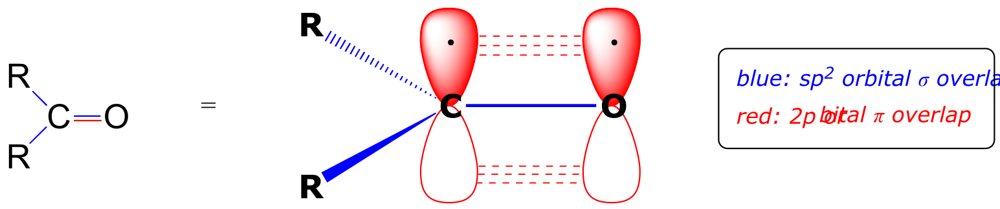fig 1
10.1B: Nucleophilic addition#
The carbon-oxygen double bond is polar: oxygen is more electronegative than carbon, so electron density is higher on the oxygen end of the bond and lower on the carbon end. Recall that bond polarity can be depicted with a dipole arrow (A in the figure below), or by showing the oxygen as bearing a partial negative charge and the carbonyl carbon a partial positive charge (B).

fig 2
A third way to illustrate the carbon-oxygen dipole (C in the figure above) is to consider the two main resonance contributors: the major form, which is what you typically see drawn in Lewis structures, and a minor but very important contributor in which both electrons in the π bond are localized on the oxygen, giving it a full negative charge. The latter depiction shows the carbon with an empty 2p orbital and a full positive charge.
However the bond polarity is depicted, the end result is that the carbonyl carbon is electron-poor - in other words, it is an electrophile. In addition, the trigonal planar geometry means that the carbonyl group is unhindered). Thus, it is an excellent target for attack by an electron-rich nucleophilic group, a mechanistic step called nucleophilic addition:
Nucleophilic addition to an aldehyde or ketone (enzymatic)
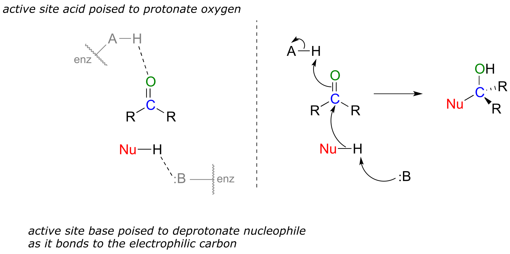fig 3
Notice the acid-base catalysis that is going on in this generalize mechanism: in the enzyme active site, a basic group is poised to deprotonate the nucleophile (thus enhancing its nucleophilicity) as begins to attack the carbonyl carbon, while at the same time an acidic proton on another active site group is poised just above the carbonyl oxygen (thus enhancing the electrophilicity of the carbon), ready to protonate the oxygen and neutralize any negative charge that builds up.
10.1C: Stereochemistry of nucleophilic addition to a carbonyl#
Recall from section 3.11B that when the two groups adjacent to a carbonyl are not the same, we can distinguish between the re and si ‘faces’ of the planar structure.
The concept of a trigonal planar group having two distinct faces comes into play when we consider the stereochemical outcome of a nucleophilic addition reaction. Notice that in the course of a carbonyl addition reaction, the hybridization of the carbonyl carbon changes from sp2 to sp3, meaning that the bond geometry changes from trigonal planar to tetrahedral. If the two R groups are not equivalent, then a chiral center is created upon addition of the nucleophile. The configuration of the new chiral center depends upon which side of the carbonyl plane the nucleophile attacks from.
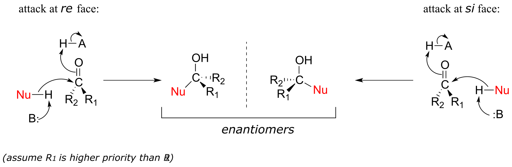fig 4
If the reaction is catalyzed by an enzyme, the stereochemistry of addition is (as you would expect) tightly controlled, and leads to one stereoisomer exclusively- the nucleophilic and electrophilic substrates are bound in specific positions within the active site, so that attack must occur specifically from one side and not the other. Nonenzymatic reactions of this type often result in a 50:50 mixture of stereoisomers, but it is also possible that one stereoisomer may be more abundant, depending on the structure of the reactants and the conditions under which the reaction takes place. We’ll see some examples of this phenomenon soon when we look at cyclic forms of sugar molecules.
10.2: Hemiacetals, hemiketals, and hydrates#
10.2A: Overview#
One of the most important examples of a nucleophilic addition reaction in biochemistry, and in carbohydrate chemistry in particular, is the addition of an alcohol to a ketone or aldehyde. When an alcohol adds to an aldehyde, the result is called a hemiacetal; when an alcohol adds to a ketone the resulting product is a hemiketal.
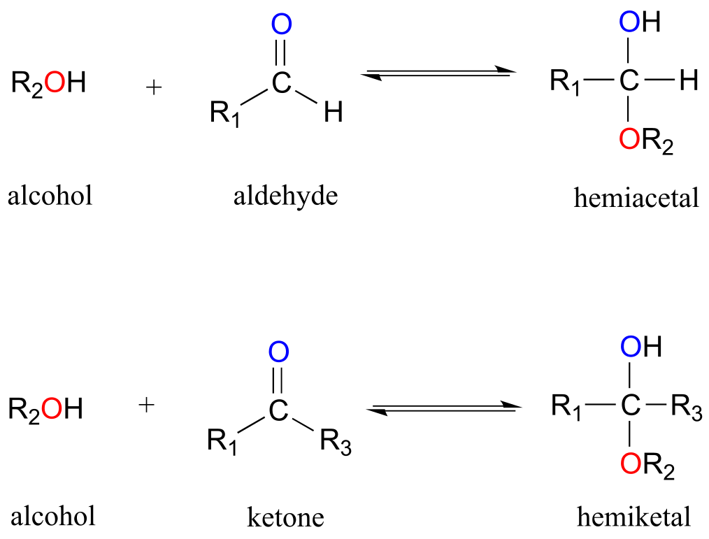fig 5
(The prefix ‘hemi’ (half) is used in each term because, as we shall soon see, addition of a second alcohol nucleophile can occur, resulting in species called acetals and ketals.)
The conversion of an alcohol and aldehyde (or ketone) to a hemiacetal (or hemiketal) is a reversible process. The generalized mechanism for the process at physiological pH is shown below.
Biochemical mechanism of hemiacetal formation:

fig 6
In general, hemiacetals (and hemiketals) are higher in energy than their aldehyde-alcohol components, so the equilibrium for the reaction lies to the left. As we will soon see in the context of glucose and other sugars, however, five- and six-membered cyclic hemiacetals are considerably lower in energy, and are favored at equilibrium: recall from chapter 3 the inherent stability of five- and six-membered rings.
Aldehydes and ketones, when in aqueous solution, exist in equilibrium with their hydrate form. A hydrate forms as the result of a water molecule adding to the carbonyl carbon of the aldehyde or ketone.
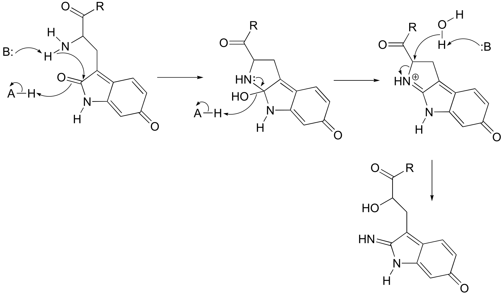fig 6a
Although you should be aware that aldehyde and ketone groups may exist to a considerable extent in their hydrated forms when in aqueous solution (depending upon their structure), they are usually drawn in their non-hydrated form for the sake of simplicity.
The mechanism we just saw for hemiacetal formation applies to biochemical reactions occurring at physiological pH. In the organic laboratory, however, hemiacetal and hemiketal formation usually takes place in the presence of a strong acid. The acid catalyzes the reaction by protonating the carbonyl oxygen, thus increasing the electrophilicity of the carbonyl carbon. Notice in the mechanism below that highly acidic intermedia/OCBE_IItes are drawn which would be unreasonable to propose for the corresponding biochemical mechanisms occurring at physiological pH.
Acid-catalyzed hemiacetal formation (non-biological):

fig 6b
10.2B: Sugars as intramolecular hemiacetals and hemiketals#
As stated above, the reactions of hemiacetals and hemiketals are central to the chemistry of carbohydrates. Recall that sugar molecules generally contain either an aldehyde or a ketone functional group, in addition to multiple alcohol groups. Aldehyde sugars are often referred to as aldoses; ketone sugars as ketoses. For example, glucose is an aldose, and fructose is a ketose - their structures are drawn below in Fischer projection:

fig 8
Exercise 10.1: What term describes the relationship between glucose and fructose (in other words, what kind of isomers are they)?
Glucose and fructose are shown above in their open-chain form. However, recall from section 1.3C that in aqueous solution, glucose, fructose, and other sugars of five or six carbons rapidly interconvert between straight-chain and cyclic forms. This occurs through the formation of intramolecular hemiacetals and hemiketals. This simply means that the ‘R’ group of the alcohol is already covalently attached to the ‘R ‘group of the aldehyde (R1 in our general mechanism).

fig 9a
Unlike most of the biochemical reactions you will see in this text, sugar cyclization reactions are not catalyzed by enzymes: they occur spontaneously and reversibly in aqueous solution. For most five- and six-carbon sugars, the cyclic forms predominate in equilibrium.
The cyclic form of glucose is a six-membered ring, with an intramolecular hemiacetal formed by attack of the hydroxl on carbon #5 to the aldehyde carbon (carbon #1, also called the anomeric carbon in carbohydrate terminology).
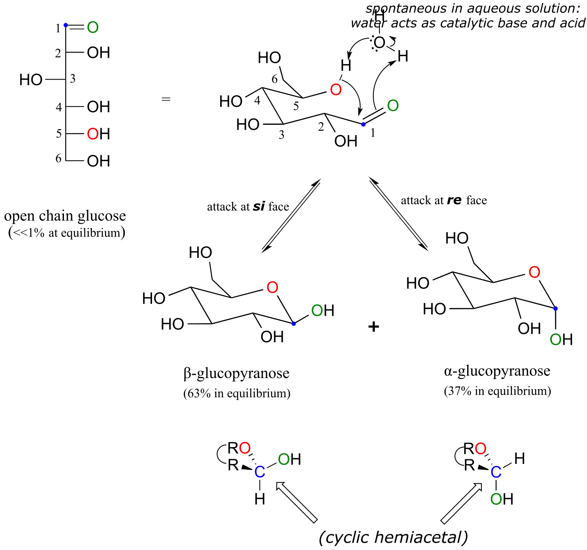
fig 9
The cyclic form of glucose is called glucopyranose. As was discussed above, nucleophilic attack on a planar carbonyl group can occur at either face of the plane, leading to two different stereochemical outcomes - in this case, to two different diastereomers. In carbohydrate nomenclature, these two diastereomers are referred to as the α and β anomers of glucopyranose.
Because the formation of glucopyranose occurs spontaneously without enzyme catalysis, shouldn’t equal amounts of these two anomers form? In fact, this does not happen: there is almost twice as much of one anomer than the other at equilibrium. Why is this? Remember (section 3.2) that six-membered rings exist predominantly in the chair conformation, and that the lower energy chair conformation is that in which unfavorable interactions between substituents are minimized – in most cases, this is the conformation in which larger substituents are in the equatorial position. In the lower-energy chair conformation of the major β anomer of glucopyranose, all of the hydroxyl groups are in the equatorial position, but in the minor α anomer one hydroxyl group is forced into the axial position. As a result, the α anomer is higher in energy, and less abundant at equilibrium.

fig 10
Exercise 10.2: Draw a mechanism for the conversion of α-glucopyranose to open-chain glucose.
Fructose in aqueous solution forms a six-membered cyclic hemiketal called fructopyranose when the hydroxyl oxygen on carbon #6 attacks the ketone carbon (carbon #2, the anomeric carbon in fructose).
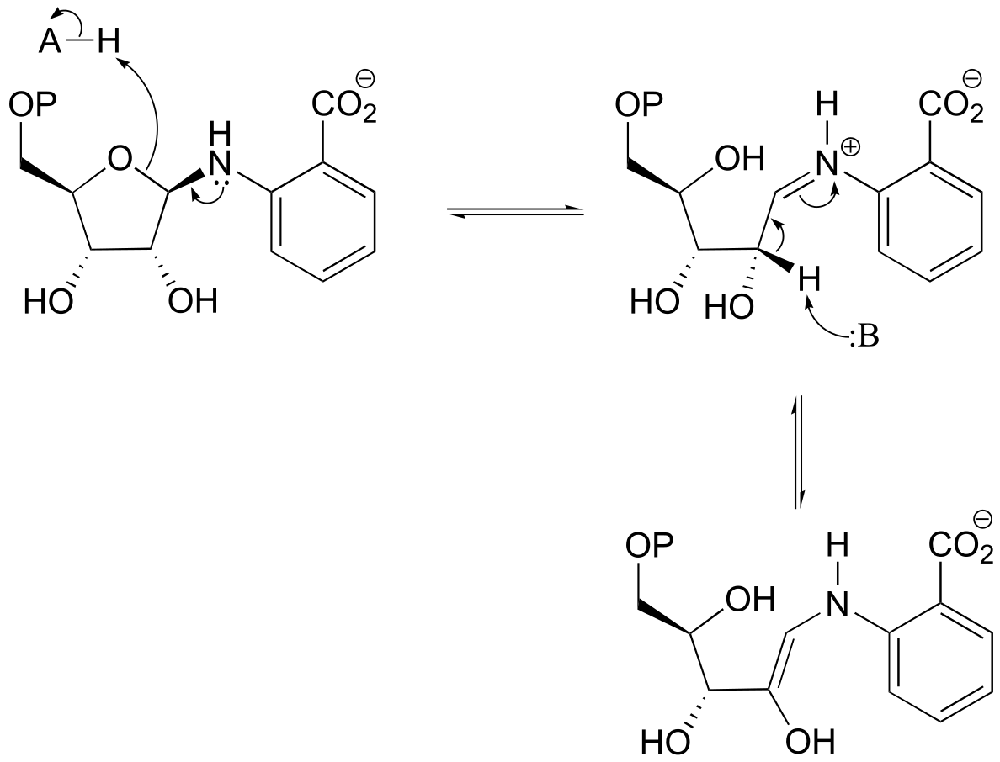
fig 11
In this case, the β anomer is heavily favored in equilibrium by a ratio of 70:1, because in the minor α anomer the bulkier CH2OH group occupies an axial position.
Notice in the above figure that the percentages of α and β anomers present at equilibrium do not add up to 100%. Fructose also exists in solution as a five-membered cyclic hemiketal, referred to in carbohydrate nomenclature as fructofuranose. In the formation of fructofuranose from open-chain fructose, the hydroxyl group on the fifth carbon attacks the ketone.

fig 12)
In aqueous solution, then, fructose exists as an equilibrium mixture of 70% β-fructopyranose, 23% β-fructofuranose, and smaller percentages of the open chain and cyclic α-anomers. The β-pyranose form of fructose is one of the sweetest compounds known, and is the main component of high-fructose corn syrup. The β-furanose form is much less sweet.
Although we have been looking at specific examples for glucose and fructose, other five- and six-carbon monosaccharides also exist in solution as equilibrium mixtures of open chais and cyclic hemiacetals and hemiketals. Shorter monosaccharides are unlikely to undergo analogous ring-forming reactions, however, due to the inherent instability of three and four-membered rings.
Exercise 10.3:
a) Identify the anomeric carbon of each of the sugars shown below, and specify whether the structure shown is a hemiacetal or hemiketal.
b) Draw mechanisms for cyclization of the open-chain forms to the cyclic forms shown.
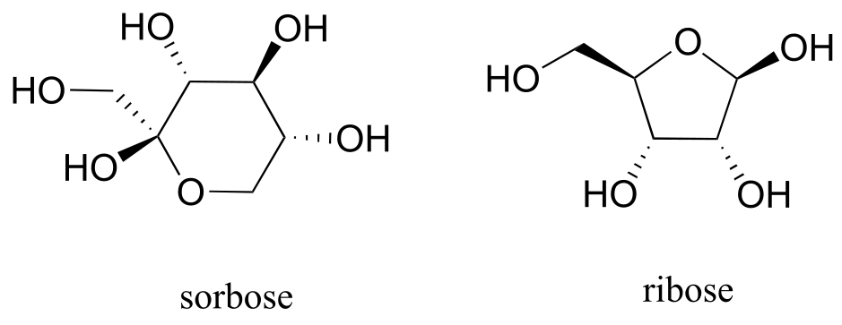
fig 12a
10.3: Acetals and ketals#
10.3A: Overview#
Hemiacetals and hemiketals can react with a second alcohol nucleophile to form an acetal or ketal. The second alcohol may be the same as the first (ie*.* if R2 = R3 in the scheme below), or different.
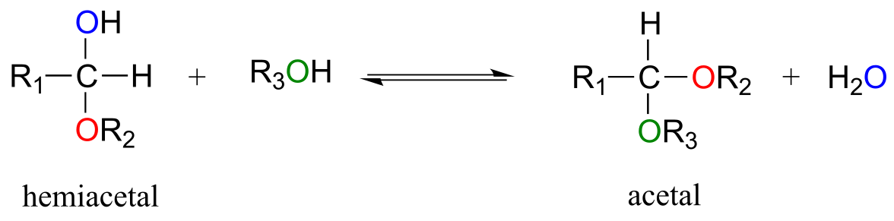
fig 13
Although we focus here on biological reactions, it is instructive in this case to consider non-biological acetal-forming reactions before we look at their biochemical counterparts. In a non-enzymatic context, acetal/ketal formation - just like hemiacetal/hemiketal formation - is generally catalyzed by a strong acid.
Acid-catalyzed acetal formation (non-biological)

fig 18b
The role of the acid catalyst is to protonate the OH group of the acetal, thus making it a good leaving group (water). Notice something important here***: the conversion of a hemiacetal to an acetal is simply an SN1 reaction, with an alcohol nucleophile and water leaving group.*** The carbocation intermedia/OCBE_IIte in this SN1 mechanism is stabilized by resonance due to the oxygen atom already bound to the electrophilic carbon.
Below are some examples of simple, non-biological acetal and ketals.
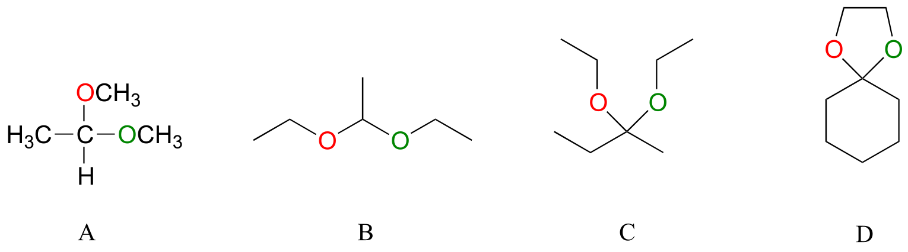
fig
13a
Exercise 10.4: For each acetal/ketal A-D in the figure above, specify the required aldehyde/ketone and alcohol starting materials.
Exercise 10.5: Categorize each of the following molecules as a hemiacetal, hemiketal, acetal, ketal, hydrate of an aldehyde, or hydrate of a ketone.
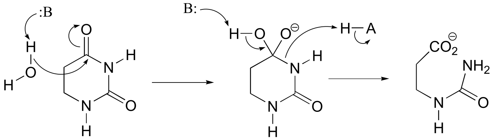
fig 15c
Exercise 10.6: Specify the acetal/ketal that would form from a reaction between the given starting compounds.

fig 15d
Exercise 10.7: Specify the aldehyde/ketone and alcohol combination that would be required to form the compounds in exercise 10.5.
10.3B: Glycosidic bond formation#
Now, let’s consider acetal formation in a biochemical context. A very important example of the acetal/ketal group in biochemistry is the glycosidic bonds which link individual sugar monomers to form polysaccharides (see section 1.3C for a quick review). Look at the glycosidic bond between two glucose monomers in a cellulase chain:

fig 16
If you look carefully, you should recognize that carbon #1, the anomeric carbon on the left-side glucose monomer, is the central carbon of an acetal group. Biochemists refer to this as a β-1,4 linkage, because the stereochemistry at carbon #1 is β in the specialized carbohydrate nomenclature system, and it is linked to carbon #4 of the next glucose on the chain. The vast structural diversity of carbohydrates stems in large part from the different linkages that are possible - both in terms of which two carbons are linked, and also the stereochemistry of the linkage. You will see many more variations of glycosidic bond linkage patterns if you study carbohydrate biochemistry in greater depth.
Reactions in which new glycosidic bonds are formed are catalyzed by enzymes called glycosyltransferases, and in organic chemistry terms these reactions represent the conversion of a hemiacetal to an acetal (remember that sugar monomers in their cyclic form are hemiacetals and hemiketals). The mechanism for glycosidic bond formation in a living cell parallels the acid-catalyzed (non-biological) acetal-forming mechanism, with an important difference: rather than being protonated, the OH group of the hemiacetal is converted to a good leaving group by phosphorylation (this is a pattern that we are familiar with from chapters 9 and 10). The specific identity of the activating phosphate group varies for different reactions, so it is generalized in the figure below.
Mechanism for (biochemical) acetal formation:
Hemiacetal activation phase:

acetal formation phase:

fig 18
Step A (Activation phase): This phase of the reaction varies according to the particular case, but always involves phosphate group transfer steps that are familiar from chapter 9. What is most important for our present discussion, however, is simply that the hydroxyl group on the hemiacetal has been activated - ie. made into a good leaving group - by phosphorylation.
Step 1: Now that the leaving group has been activated, it does its job and leaves, resulting in a resonance stabilized carbocation.
Step 2: A nucleophilic alcohol on the growing cellulose chain attacks the highly electrophilic carbocation to form an acetal. Here is where the stereochemistry of the new glycosidic bond is determined: depending on the reaction, the alcohol nucleophile could approach from either side of the planar carbocation.
To reiterate: it is important to recognize the familiar SN1 mechanistic pattern in play here: in step A, a poor leaving group is converted into a good leaving group, in step 1 the leaving group leaves and a stabilized carbocation is left behind, and in step 2 a nucleophile attacks to form a new bond and complete the substitution process. Look back at the SN1 reactions we saw in chapter 8 if you are having trouble making this mechanistic connection.
Now, let’s look specifically at the glycosyl transferase reaction mechanism in which a new glycosidic bond is formed on a growing cellulose chain. Glucose (a hemiacetal) is first activated through two enzymatic phosphate transfer steps: step A1, a phosphate isomerization reaction with a mechanism similar to the reaction in problem P9.13, followed by a UTP-dependent step A2, for which you were invited to propose a mechanism in problem P9.12.

fig 19a
The UDP group on glucose-UDP then leaves (step 1 below), forming a resonance-stabilized carbocation intermedia/OCBE_IIte. Attack by the alcohol group on the growing cellulose chain in step 2 forms the glycosidic (acetal) bond. Note the inversion of stereochemistry. Mol. Plant 2011, 4, 199

fig 19
10.3C: Glycosidic bond hydrolysis#
Acetals can be hydrolyzed back to hemiacetals. Notice that an acetal to hemiacetal conversion is an SN1-type reaction with a water nucleophile and an alcohol leaving group.
Mechanism for acetal hydrolysis (enzyme-catalyzed):

fig 20
In step 1, an alcohol is protonated by a nearby acid group as it breaks away to form a resonance-stabilized carbocation intermedia/OCBE_IIte. The carbocation is attacked by a nucleophilic water molecule in step 2 to form a hemiacetal.
The general mechanism above applies to reactions catalyzed by glycosidase enzymes, which catalyze the cleavage of glycosidic bonds in carbohydrates. In the introduction to this chapter, we learned about ongoing research in the field of cellulosic ethanol. Recall that the main bottleneck in the production of ethanol from sources such as switchgrass or wood is the cellulase-catalyzed step in which the glycosidic bonds in cellulose are cleaved. Cellulose-digesting microbes have several different but closely related forms of cellulase enzymes, all working in concert to cleave cellulose into smaller and smaller pieces until individual glucose molecules are free to be converted to ethanol by the fermentation process. Below is a representative mechanism for a cellulase reaction.
Cellulase mechanism:

fig 21
The starch-digesting amylase enzymes used in the corn ethanol production process catalyze similar glycoside hydrolysis reactions, the main difference being the opposite stereochemistry at the anomeric carbon of the substrate.
Exercise 10.8: Notice that the cellulose glycososide bond-forming reaction requires the cell to ‘spend’ a high-energy UTP molecule, but the cellulase glycoside bond-breaking reaction does not. Use your knowledge of chemical thermodynamics to explain this observation.
Exercise 10.9: Below is the structure of the artificial sweetener sucralose. Identify the two anomeric carbons in the disaccharide.

Exercise 10.10: Robinose is a disaccharide found in ‘Chenille Plant’, a flowering shrub native to the Pacific Islands.

fig 21c
a) Identify the two anomeric carbons and the glycosidic bond in robinose.
b) Using the same carbon numbering system as for glucose in the earlier figure, fill in in the carbon numbers (#1 through #6) for each of the monosaccharides that make up robinose.
c) Based on what you know of glycosidic bond-forming reactions in nature, propose a reasonable mechanism for the linking of the two monosaccharides, starting with the activated hemiacetal species, assuming that it is a UDP species as in the cellulose gycosidic bond-forming reaction.
d) Draw the open chain form of each of the monosaccharides
Exercise 10.11: Look again at the structures of the two-glucose fragments of cellulose and amylose shown the introduction to this chapter. A structural feature of the cellulose polymer makes it inherently more resistant to enzymatic hydrolysis compared to starch. Explain. (Hint: think about intermolecular interactions.)
**
**
10.4: N-glycosidic bonds#
We have just seen that when a second alcohol attacks a hemiacetal or hemiketal, the result is an acetal or ketal, with the glycosidic bonds in carbohydrates providing a biochemical example. But if a hemiacetal is attacked not by a second alcohol but by an amine, what results is a kind of ‘mixed acetal’ in which the anomeric carbon is bonded to one oxygen and one nitrogen.

fig 22a
This arrangement is referred to by biochemists as an N-glycosidic bond. You may recognize these as the bonds in nucleosides and nucleotides that link the G, C, A, T, or U base to the sugar.

fig 22
The formation of N-glycosidic bonds in ribonucleotides is closely analogous to the formation of glycosidic bonds in carbohydrates – again, it is an SN1-like process with an activated water leaving group. Typically, the hemiacetal is activated by diphosphorylation, as illustrated in step A of the general mechanism below.
Mechanism for formation of an *N-*glycosidic bond:

fig 22b
The starting point for the biosynthesis of purine (G and A) ribonucleotides is a five-carbon sugar called ribose-5-phosphate, which in solution takes the form of a cyclic hemiacetal. The critical N-glycosidic bond is established through substitution of NH3 for OH at the anomeric carbon of the ribose. The anomeric OH group is first activated (step A below) to form an activated intermedia/OCBE_IIte called phosphoribosylpyrophosphate (PRPP). The inorganic pyrophosphate then leaves to generate a resonance-stabilized carbocation (step 1) which is attacked by a nucleophilic ammonia in step 2 to establish the N-glycosidic bond.

fig 23
With the N-glycosidic bond in place, the rest of the purine base is assembled piece by piece by other biosynthetic enzymes.
(The mechanism above should look familiar - we saw step A in chapter 9 as an example of alcohol diphosphorylation , and steps 1 and 2 in chapter 8 as an example of a biochemical SN1 reaction).
Establishment of the N-glycosidic bond in biosynthesis of the pyrimidine ribonucleotides and (U, C and T) also begins with PRPP, but here the ring structure of the nucleotide base part of the biomolecule has already been ‘pre-fabricated’ in the form of orotate:

fig 23a
Exercise 10.12: We have just seen an illustration of the formation of an N-glycosidic bond in a biosynthetic pathway. In the catabolic (degradative) direction, an N-glycosidic bond must be broken, in a process which is analogous to the hydrolysis of a glycosidic bond (illustrated earlier). In the catabolism of guanosine nucleoside, the N-glycosidic bond is broken by inorganic phosphate (not water!) apparently in a concerted (SN2-like) displacement reaction (Biochemistry 2011, 50, 9158). Predict the products of this reaction, and draw a likely mechanism.

Exercise 10.13: Glycoproteins are proteins that are linked, by glycosidic or N-glycosidic bonds, to sugars or carbohydrates through an asparagine, serine, or threonine side chain on the protein. As in other glycosylation and N-glycosylation reactions, the hemiacetal of the sugar must be activated prior to glycosidic bond formation. Below is the structure of the activated sugar hemiacetal substrate in an asparagine glycosylation reaction. (Nature 2011, 474, 350)

fig 21a
Draw the product of the asparagine glycosylation reaction, assuming inversion of configuration of the anomeric carbon.
**
**
10.5: Imines and iminium ions#
The electrophilic carbon atom of aldehydes and ketones can be the target of nucleophilic attack by amines as well as alcohols. The end result of attack by an amine nucleophile is a functional group in which the C=O double bond is replaced by a C=N double bond, and is known as an imine. (An equivalent term is ‘Schiff base’, but we will use ‘imine’ throughout this book). Recall from section 7.5B that imines have a pKa of approximately 7, so at physiological pH they can be accurately drawn as either protonated (iminium ion form) or neutral (imine).
Iminium ion formation
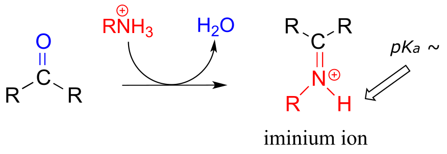
Mechanism (enzymatic):

fig 25
Mechanistically, the formation of an imine involves two steps. First, the amine nitrogen attacks the carbonyl carbon in a nucleophilic addition step (step 1) which is closely analogous to hemiacetal and hemiketal formation. Based on your knowledge of the mechanism of acetal and ketal formation, you might expect that the next step would be attack by a second amine to form a compound with a carbon bound to two amine groups – the nitrogen version of a ketal or acetal. Instead, what happens next (step 2 above) is that the nitrogen lone pair electrons ‘push’ the oxygen off of the carbon, forming a C=N double bond (an iminium) and a displaced water molecule.
The conversion of an iminium back to an aldehyde or ketone is a hydrolytic process (bonds are broken by a water molecule), and mechanistically is simply the reverse of iminiom formation:
Hydrolysis of an iminium ion:
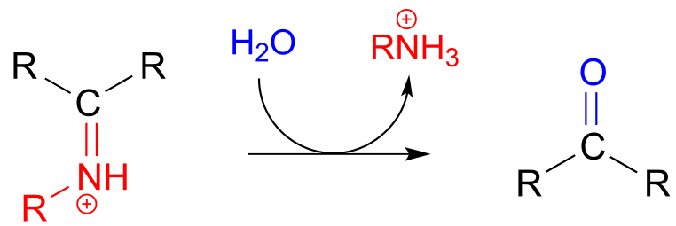
Mechanism (enzymatic):

fig 26
Carbon-carbon bond forming enzymes called aldolases (which we’ll cover in detail in chapter 12) often form iminium links between a carbonyl carbon on a substrate and a lysine residue from the active site of the enzyme, as in this aldolase reaction from the Calvin Cycle:
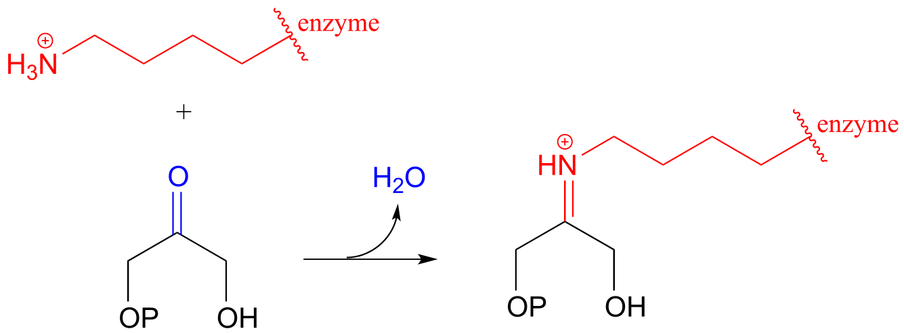
fig 27
After the carbon-carbon bond forming part of an aldolase reaction is completed, the iminium linkage is hydrolyzed, freeing the product so that it can diffuse out of the active site and allow another catalytic cycle to begin.
In chapter 17, we will learn about reactions that are dependent upon a coenzyme called pyridoxal phosphate (PLP), also known as vitamin B6. In these reactions, the aldehyde carbon of PLP links to an enzymatic lysine in the active site:
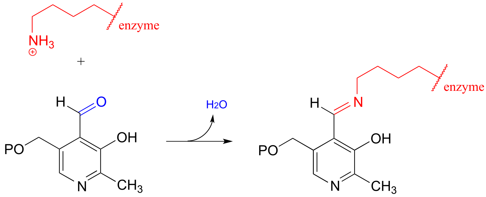
fig 27c
Then, the PLP-lysine imine linkage is traded for an imine linkage between PLP and the amino group on the substrate, in what can be referred to as a transimination.

The mechanism for a transimination is very similar to that of imine formation:
Transimination reaction:
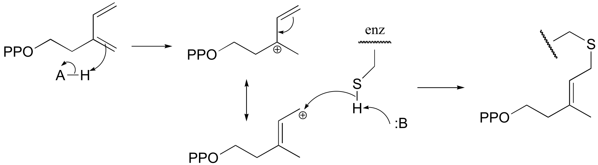
Mechanism:

fig 27e
Exercise 10.14: Draw an imine that could be formed between each pair of compounds.
a)
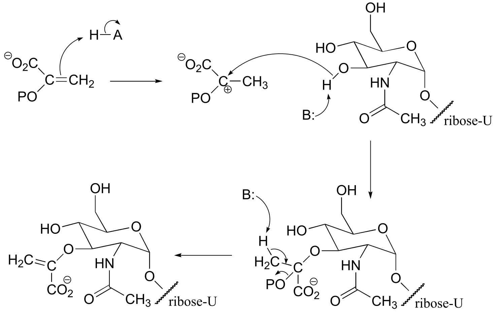
b)

c)

fig 28a
Exercise 10.15: Draw the imminium hydrolysis product for each of the following compounds.
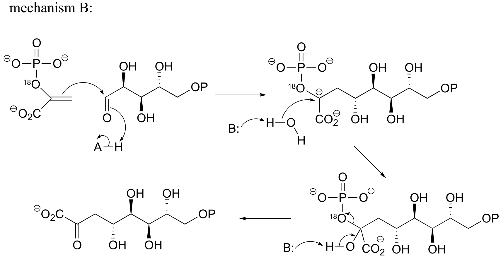fig 28b
Exercise 10.16:
a) The metabolic intermedia/OCBE_IIte shown below undergoes an intramolecular imine formation as a step in the biosynthesis of lysine (EC 4.3.3.7). Draw the product of this intramolecular imine formation step.

fig 27a
b) Predict the product of this iminium hydrolysis step (EC 2.3.1.117) from the proline degradation pathway.
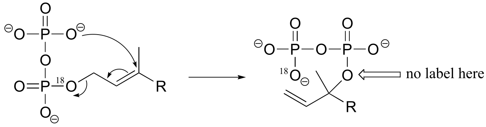
10.6: A look ahead: addition of carbon and hydride nucleophiles to carbonyls#
We have seen in this chapter a number of reactions in which oxygen and nitrogen nucleophiles add to carbonyl groups. Other nucleophiles are possible in carbonyl addition mechanisms: in chapters 12 and 13, for example, we will examine in detail some enzyme-catalyzed reactions where the attacking nucleophile is a resonance stabilized carbanion (usually an enolate ion):
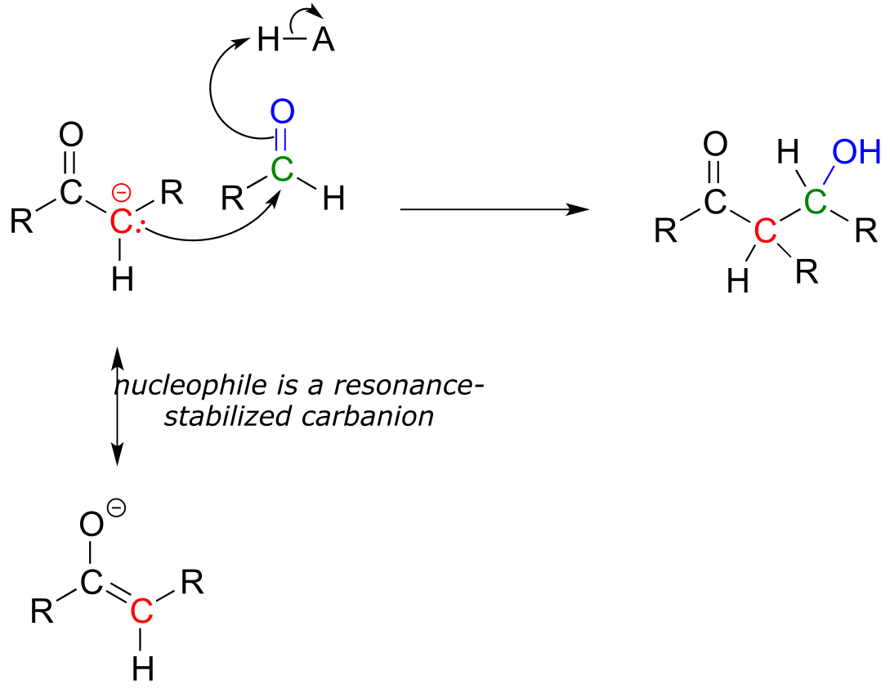
fig 28
Then in chapter 15, we will see how the carbonyl groups on aldehydes and ketones can be converted to alcohols through the nucleophilic addition of what is essentially a hydride (H-) ion.

fig 29
Key concepts for review#
Before moving on to the next chapter, you should be confident in your ability to:
Recognize aldehyde and ketone groups in organic biomolecules
Draw/explain the bonding picture for aldehyde and ketone groups
Explain why the carbonyl carbon in an aldehyde or ketone is electrophilic
Draw complete curved arrow mechanisms for the following reaction types:
formation of a hemiacetal/hemiketal
collapse of a hemiacetal/hemiketal to revert to an aldehyde/ketone
formation and hydrolysis of an acetal/ketal
formation and hydrolysis of an N-glycosidic bond
formation and hydrolysis of an imine
transimination
Explain how the carbocation intermedia/OCBE_IItes in glycosidic bond formation and hydrolysis reactions are stabilized by resonance
Explain the stereochemical considerations of a nucleophilic addition to an aldehyde/ketone, especially in the context of glycosidic bond formation. Be able to identify the re and si faces of an aldehyde, ketone, or imine.
In addition to these fundamental skills, you should develop your confidence in working with end-of-chapter problems involving more challenging, multi-step biochemical reactions.
Problems#
P10.1 Draw a mechanism showing the formation of an imine linkage between a lysine side chain and α-ketobutyrate (this is the first step in the degradation of lysine, EC 1.5.1.8).

P10.2: Draw four possible cyclic hemiketal isomers of the compound below.

P10.3: A downstream intermedia/OCBE_IIte in the lysine degradation pathway undergoes imine hydrolysis to release two amino acid products (EC 1.5.1.1). Draw a mechanism for this hydrolysis reaction, and show the structures of the two products formed.
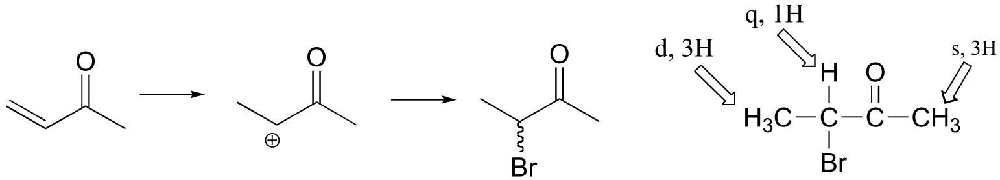
P10.4: Below is the structure of lactose, the sugar found in dairy products.

Lactose is a disaccharide of galactose and glucose. People who are lactose intolerant do not produce enough lactase - the enzyme that hydrolyzes the glycosidic bond linking the two monosaccharides - to be able to fully digest dairy products.
a) Draw a likely stabilized carbocation intermedia/OCBE_IIte in the hydrolysis reaction catalyzed by lactase.
b) Draw, in the chair conformation, the structure of what you predict would be the most abundant form of the galactose monosaccharide in aqueous solution.
c) Is galactose an aldose or a ketose?
d) Draw, showing sterochemistry, the open-chain form of galactose.
P10.5: You probably know that ascorbic acid (vitamin C) acts as an antioxidant in the body. When vitamin C does its job, it ends up being oxidized to dehydroascobate, which is usually drawn as shown below, in the so-called tricarbonyl form.
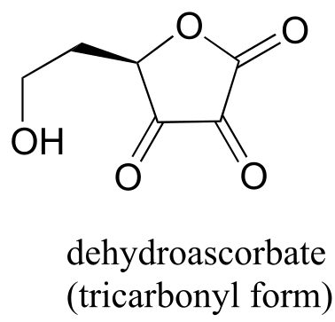
Evidence suggests, however, that the most important form of dehydroascorbate in a physiological context is one in which one of the ketone groups is in its hydrated form, and the other is an intramolecular hemiketal (see Chemical and Engineering News, Aug. 25, 2008, p. 36). Show the structure of this form of dehydroascorbic acid.
P10.6: The compound below is the product of a ring-opening imine hydrolysis step in the degradation pathway for proline, one of the amino acids. Draw the structure of the starting compound.

P10.7: The rearrangement below was proposed to proceed via imine formation followed by nucleophilic substitution. Propose a mechanism that fits this description. (J. Biol. Chem. 280, 12858, scheme 2 part 2) .

P10.8: The biochemical acetal-forming reactions we learned about in this chapter all require activation of the hemiacetal through phosphorylation. In the organic synthesis lab, non-enzymatic acetal-forming reactions are carried out with a catalytic amount of strong acid, which serves to activate the hemiacetal. Predict the product of the following acetal forming reaction, and propose a reasonable mechanism for the reaction. Remember that the reaction is carried out under acidic conditions, which means that the protonation state of intermedia/OCBE_IItes will be different than biochemical reactions occurring at neutral pH.
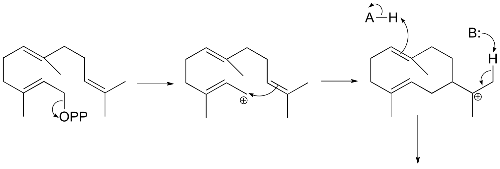Problems 9-15 all involve variations on, and combinations of, the nucleophilic addition steps that we studied in this chapter. Although the reactants and/or products may look somewhat different from the simpler aldehydes, acetals, imines, etc. that we used as examples in the chapter, the key steps still involve essentially the same mechanistic patterns. Before attempting these problems, you may want to review tautomerization reactions in section 7.6.
P10.9: The final step in the biosynthesis of inosine monophosphate (IMP, a precursor to both AMP and GMP), is a ring-closing reaction in which a new nitrogen-carbon bond (indicated by an arrow in the structure below) is formed. Predict the starting substrate for this reaction, and propose a mechanism that involves a slight variation on typical imine formation. (EC 3.5.4.10)

P10.10: Propose a mechanism for these steps in nucleotide metabolism:
a) (EC 3.5.4.5)(
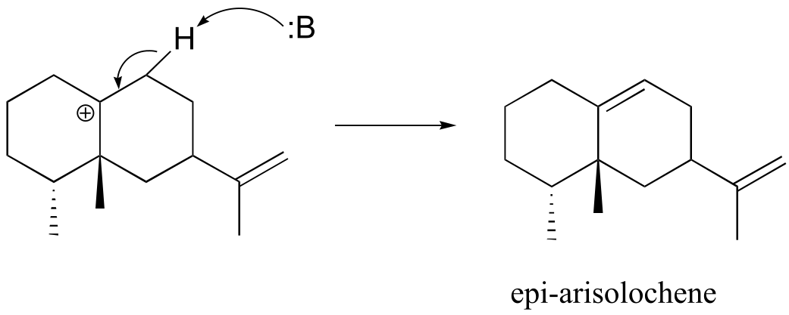
b) (EC 3.5.4.4)

P10.11
a) Draw the structure (including stereochemistry) of the compound that results when the cyclic hemiketal shown below coverts to an open-chain compound with two ketone groups.

b) The compound shown below undergoes a ring-opening reaction to form a species that can be described as both an enol and an enamine. Draw the structure (including stereochemistry) of this product, and a likely mechanism for its formation. (EC 5.3.1.24)

P10.12: Tetrahydrofolate (THF) is a coenzyme that serves as a single-carbon donor in many biochemical reactions. Unlike S-adenosylmethionine (SAM, see section 8.8), the carbon being transferred in a THF-dependent reaction is often part of a carbonyl. Below is a reaction in the histidine degradation pathway (EC 3.5.3.8). The mechanism involved is thought to be an transimination, followed by a imine-to-imine tautomerization, followed by an imine hydrolysis. Propose a reasonable mechanism that fits this description. Hint: first identify the carbon atom being transferred.

P10.13: Hydrazones are close relatives of imines, formed in reactions between aldehydes/ketones and hydrazines, a functional group containing a nitrogen-nitrogen bond. The mechanism for hydrazone formation is analogous to that of imine formation.
Guanafuracin, a known antibiotic compound, is a hydrazone, and can be prepared easily in the laboratory by combining equimolar amounts of the appropriate aldehyde and hydrazine in water (no heat or acid catalyst is required, and the reaction is complete in seconds).
Determine the starting materials required for the synthesis of guanafuracin, and propose a likely mechanism for the reaction.
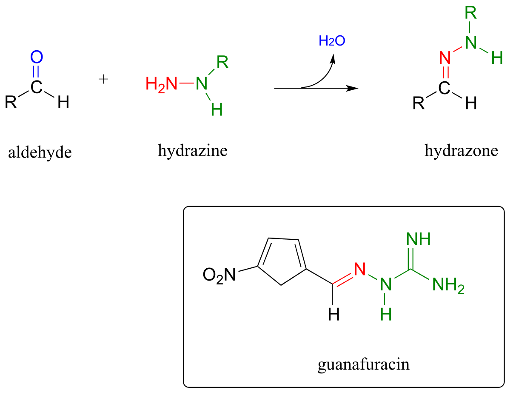
P10.14: Propose reasonable mechanisms for the following steps from the histidine biosynthesis pathway, and predict the structure of intermedia/OCBE_IIte A (which is open-chain, not cyclic).
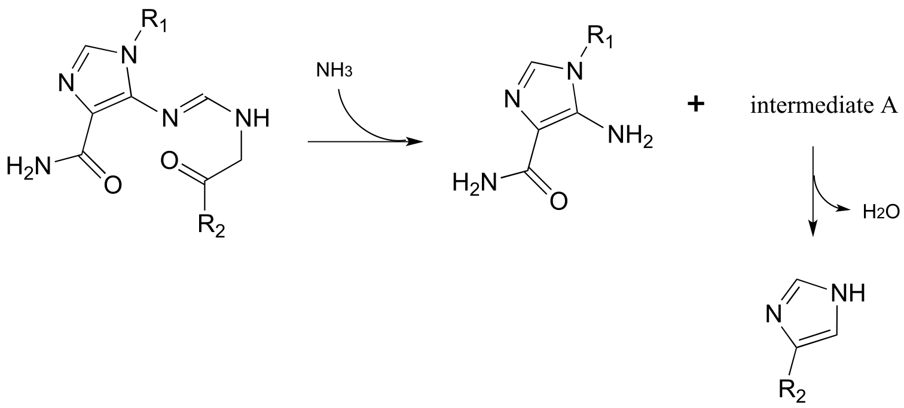
The last several problems are quite challenging!
P10.15: Propose a likely mechanism for the synthesis of glucosamine 6-phosphate from fructose-6-phosphate. One of several intermedia/OCBE_IItes is shown. (EC 2.6.1.16.)

P10.16 : α-chloromethyl ketones (structure below) are effective irreversible inhibitors of proteolytic (peptide-bond breaking) enzymes such as chymotrypsin. In these enzymes, a nucleophilic serine plays a key role in the reaction. The mechanism for inactivation of α-chymotrypsin is thought to involve, as a first step, nucleophilic attack by the active site serine on the carbonyl of the inhibitor. However, when the inactivated enzyme is analyzed, an active site histidine rather than the serine, is found to be covalently modified by the inhibitor. The structure of the modified histidine is shown below. The mechanism of inactivation is thought to involve an epoxide intermedia/OCBE_IIte - with this in mind, propose a reasonable mechanism of inactivation.
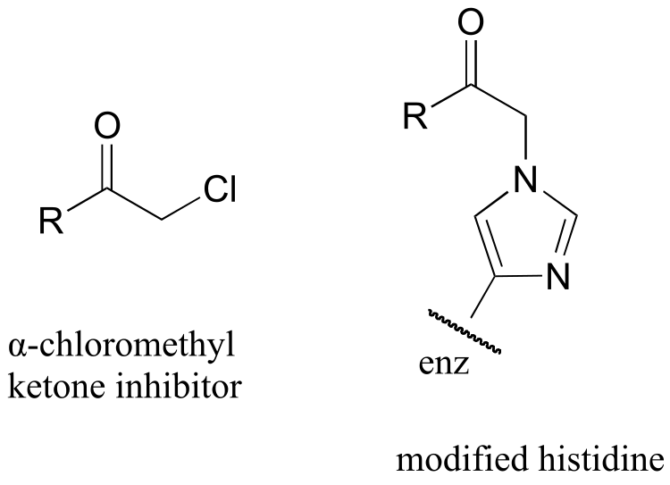
P10.17: An enzyme in E. coli bacteria catalyzes the hydrolysis of α-glucose-GDP to glucose.

1H-NMR analysis of the reaction in progress showed the initial appearance of a doublet at 4.64 ppm with J = 7.9 Hz (the spectrum contained other signals as well, of course). After 20 minutes (at which point the hydrolysis reaction has been complete for some time), another doublet began to appear slightly downfield, this one with J = 4.0 Hz. Over time, the strength of the downfield signal gradually increased and that of the upfield signal gradually decreased, until they stabilized at constant levels.
Draw a mechanism for the enzymatic hydrolysis reaction, and correlate your mechanism to the NMR data (including the appearance of the second doublet).
C11.4: Arginine deaminase, an enzyme in the arginine degradation pathway, catalyzes the transformation of (L)-arginine to (L)-citrulline via a covalent substrate-cysteine intermedia/OCBE_IIte.

This enzyme is the target for the development of drugs for cancer and immunological diseases such as arthritis. However, rather than completely and permanently shutting down the enzyme (eg. with an irreversible inhibitor), researchers are looking for a way to temporarily ‘turn down’ the activity of the enzyme. One strategy that has recently been reported involves the use of an oxygen-containing arginine analog, called canavanine, which reacts in the same way as arginine except that the second (hydrolysis) step is very slow. While the enzyme is covalently attached to the inhibitor (in the S-alkyl thiuronium stage), it is inactivated.
a) Show a mechanism for the reaction catalyzed by arginine deaminase.
b) Explain how the electronic effect of the oxygen substituent would slow down the hydrolysis step of the reaction, and why the rate of the hydrolysis step is more affected by the oxygen substitution than the S-alkylthiuronium-forming step.